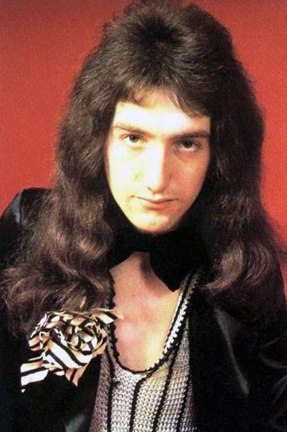
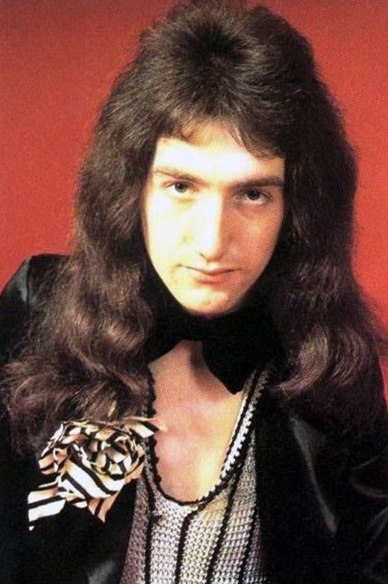
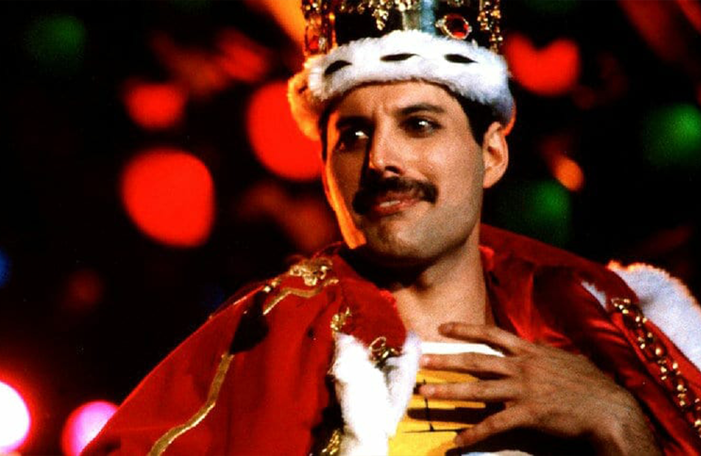
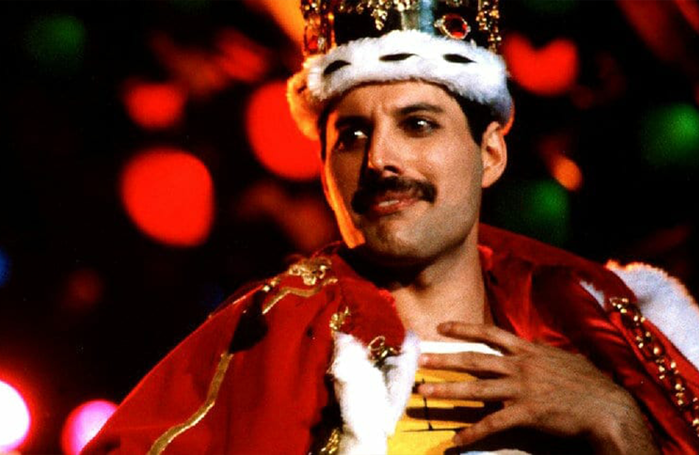

História da banda
A banda Queen começou em 1968 na cidade de Londres na Inglaterra, iniciada na época pelos integrantes Brian May e Tim Stafell.
Os dois então anunciaram na faculdade em que estudavam que estavam a procura de um baterista para a banda e acabaram conhecendo Roger Taylor.
No inicio a banda teria o nome de Smile, com este nome em 1969, assinou o primeiro seu primeiro contrato com a gravadora Mercury Records.
Em 1970 o integrante Tim Stafell saiu da então chamada Smile, no mesmo ano em que Freddy Mercury entraria no grupo, após sua entrada, o nome da banda foi trocado para o então conhecido nome Queen e o baixista John Deacon entrou para a banda.
Eles conseguiram gravar na época seu primeiro álbum chamado Queen, que ficaria conhecido depois como Queen I, e então com um acordo entre as gravadoras Trident e EMI, teriam conseguido sua primeira turnê.
Em 1974 eles lançaram seu segundo disco chamado Queen II que ficou entre os mais ouvidos da época além de conseguir sua primeira turnê como banda principal, que seria cancelada por conta de um dos integrantes adoecer.
Em 1991, após a banda fazer muito sucesso com diversos discos, o cantor Freddy Mercury revelaria a imprensa que as expeculações sobre ele ter contraido HIV eram verdadeiras, após algum tempo dessa declaração o cantor então falaceu.
Queen após isso lançou mais dois discos em 1995 e 1997 e sua história foi transformada em filme em 2018 com o título Bohemian Rhapsody.

 



 
